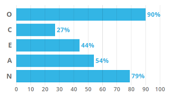
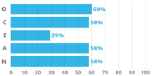
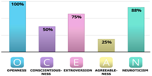
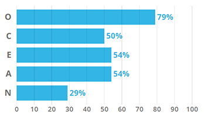

-
Victoria's Results
INFP - T | Visual Learner
 -
Nicholas' Results
INFP - A/ INFP - T | Visual Learner | Big five test concluded that Nicholas is more a listener than a person who talks

-
Allan's Results
ISFP - T | Visual Learner

-
Adele's Results
text
 -
Paul's Results
ISTP | Visual Learner

How can this be helpful?
Using the results from the personality tests it could be useful for how we work in a team and what duties we could delegate to certain people. One advantage that we could have is that a lot of the members of our team according to the Myers-Briggs are very adaptable; this could be helpful when deciding our project idea as it could mean that we are all able to perform well regardless of the project that we choose to undertake together. Giving people specific tasks will also be easier as we wouldn't have to worry too much about what works for each member as we would be able to do well in any of the tasks.
Looking at the learning styles it seems that it would be a good idea moving forward to use a lot of visual representation of our ideas as we are all visual learners, this can be helpful for each of us as we can focus on the same strategies for things such as our website. Looking at the results of our different big five personality traits also supports the idea that we are high in adaptability as that is a trait associated with people high in openness which is something that we scored quite high on looking at our results. These different results indicate that we should be able to work well together and hopefully will not run into any problems when it comes to making decisions moving forward.
Ideal Jobs
Some of the team's ideal jobs are quite similar with Paul, Nicholas and Victoria choosing either a full stack developer or a software engineer. These jobs are likely to entail a lot of similar responsibilities such as skills in software design, user centered design and programming. Some things that could differentiate these positions could be Victoria's desire to enter a more web developer focus area whereas Paul's was more related to application development which could lead to a different requirement in a programming language such as PHP vs Java. Allan's ideal job was more focused on event planning around something like Esports which is quite different from others ideal jobs in the group. Even though it is a very different area than for example software engineering, some skills could still be transferable between the two areas such as team planning and project management. Careers paths throughout the group could be quite similar between for example a full stack developer and a software engineer, however they also have potential to be very different between our ideal jobs. An Esports event planner career path would likely look very different to a software developer.